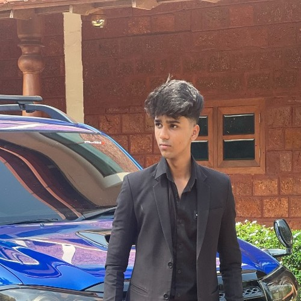

B.TECH CS-AI
T.K.M. COLLEGE OF ENGINEERING, KOLLAM
Building things
to understand
how they work
Muhammed Anfaal M M — First-year B.Tech student in Computer Science & Artificial Intelligence at TKM College of Engineering. Learning through practical engineering, Git, and open-source contributions.
